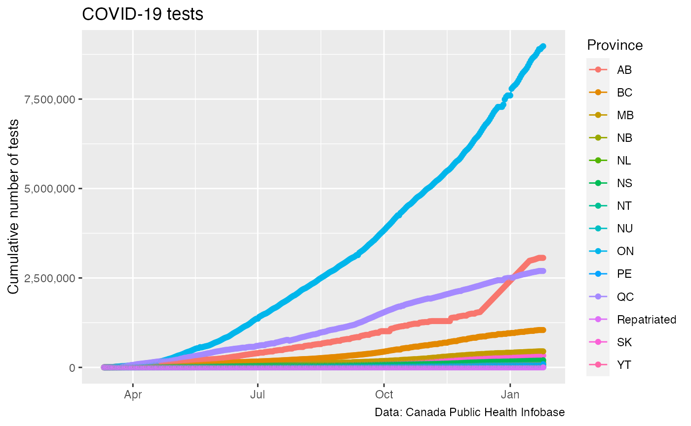

knitr::opts_chunk$set(warning = FALSE, message = FALSE)
library(CanCovidData)
library(dplyr)
library(ggplot2)test_data <- get_canada_covid_working_group_tests()
ggplot(test_data,aes(x=Date,y=Tests,color=shortProvince)) +
geom_line() +
geom_point() +
scale_y_continuous(labels=scales::comma) +
labs(title="COVID-19 tests",x=NULL,y="Cumulative number of tests",color="Province",
caption="Data: COVID-19 Canada Open Data Working Group")
case_data <- get_canada_covid_working_group_provincial_data()inner_join(case_data,test_data,by=c("shortProvince","Province","Date")) %>%
mutate(`Share positive`=Confirmed/Tests) %>%
ggplot(aes(x=Date,y=`Share positive`,color=shortProvince)) +
geom_line() +
geom_point() +
scale_y_continuous(labels=scales::percent) +
labs(title="COVID-19 tests vs confirmed cases",x=NULL,colour="Province",
caption="Data: COVID-19 Canada Open Data Working Group")